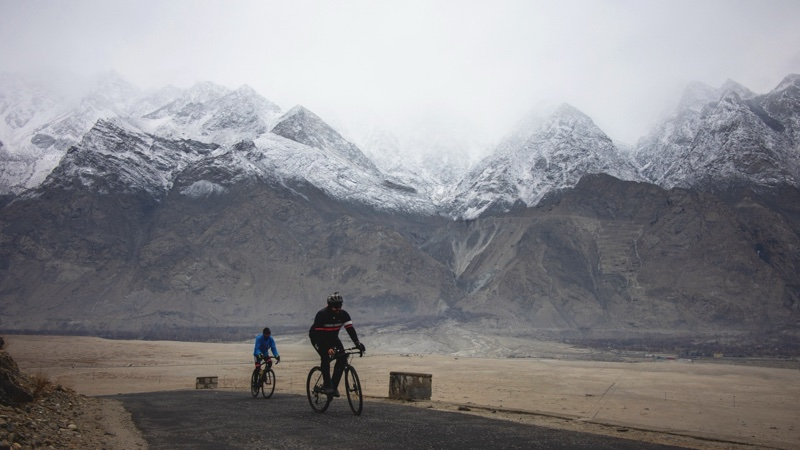
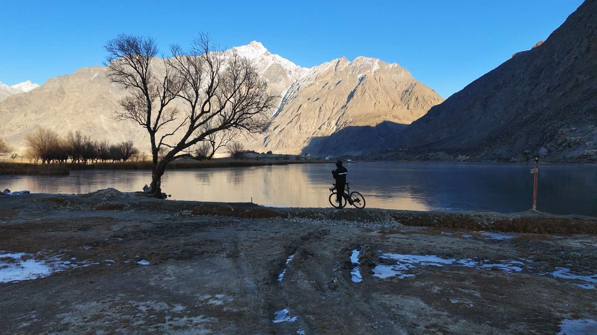
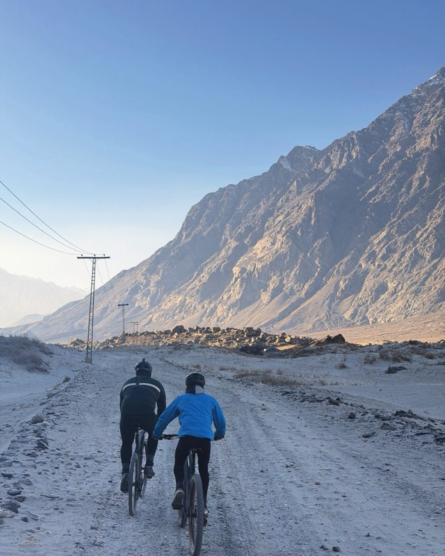
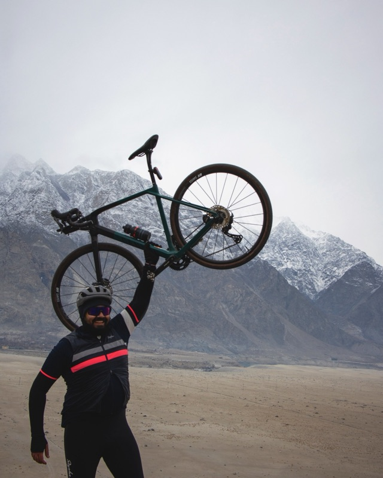
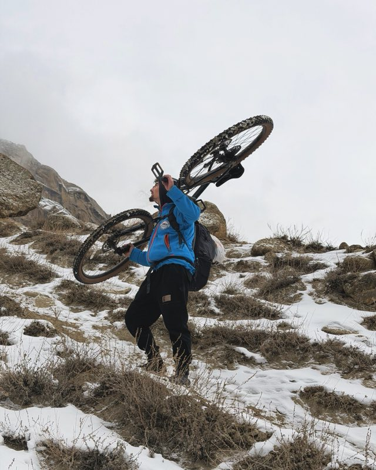
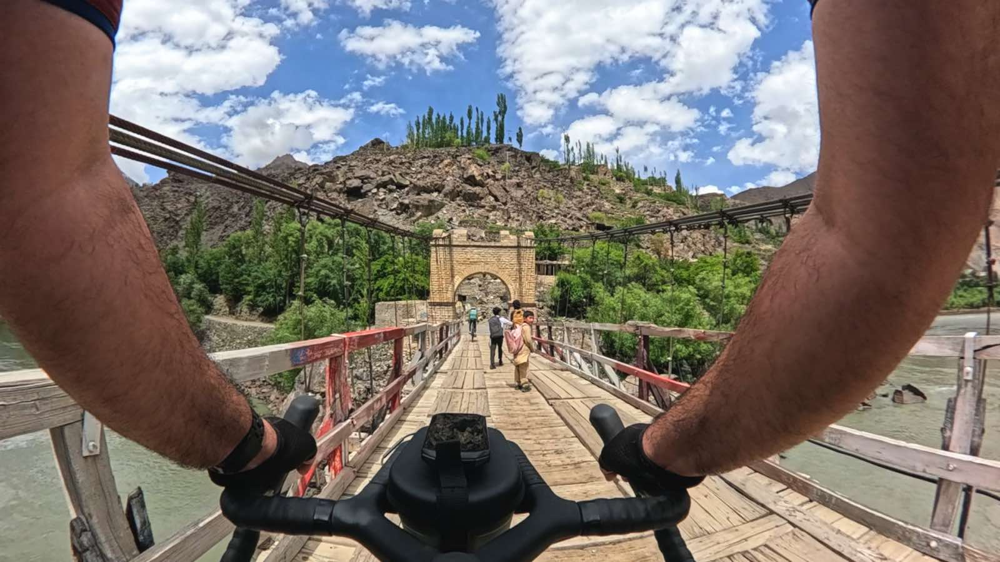
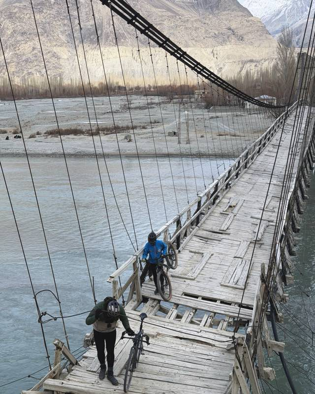
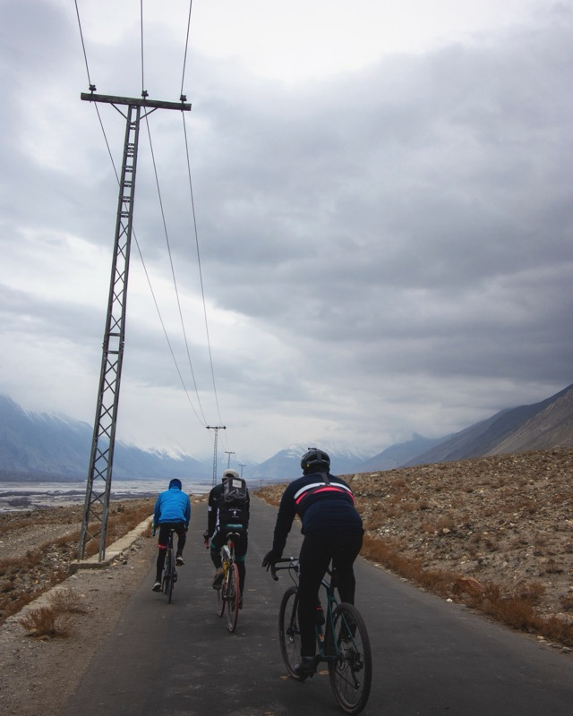
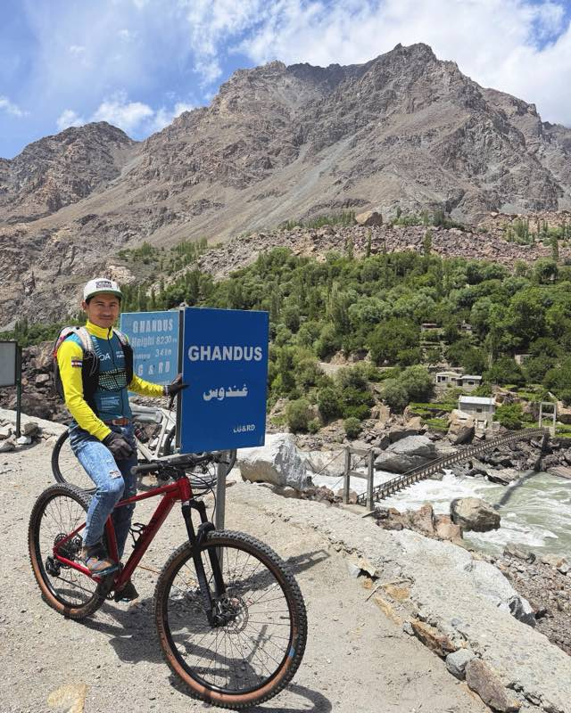
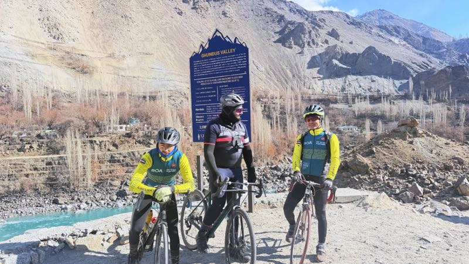

Shigar Valley
Green in summer, gold in autumn: walled lanes, apricot orchards, and the long glide down into the valley of forts.


Skardu is the start line, not the whole story.
These are the roads and valleys we keep coming back to. Point at one, and we'll sort the bike, the route, and the company. And a word you'll hear from us: above every village in Baltistan sits its broq — the high summer pasture where the livestock grazes. Some of our favourite climbs end at one.
Green in summer, gold in autumn: walled lanes, apricot orchards, and the long glide down into the valley of forts.

Still enough to hold the mountains upside down. Gravel all the way in, turquoise all the way round.

Stairs, jetties, and a lake that swallows the afternoon. Load the bikes, earn the view.
A desert at altitude, ringed by snow peaks. Sand climbs that look impossible and feel even better.

The "silent" waterfall that all but freezes solid in winter. Worth the detour in any season — the resident cat agrees.
Our hike-a-bike guilty pleasure. Carry up, grin down.

Wood, wire, and the river underneath. Crossing one with a bike on your shoulder is a rite of passage.


Big skies, empty tarmac and the valley opening ahead. The ride that starts as a warm-up and keeps going.

Quiet valley riding past villages that still wave at strangers.


The long way round, through poplar tunnels and farmland.
The crowds leave, the Indus turns turquoise, and the cold rewrites the map. Bring layers; we'll bring the fat bike.
Expect tractors, yak jams, sheep crossings and the occasional duck convoy. The rule is simple: everything else has right of way. Precious Humans →